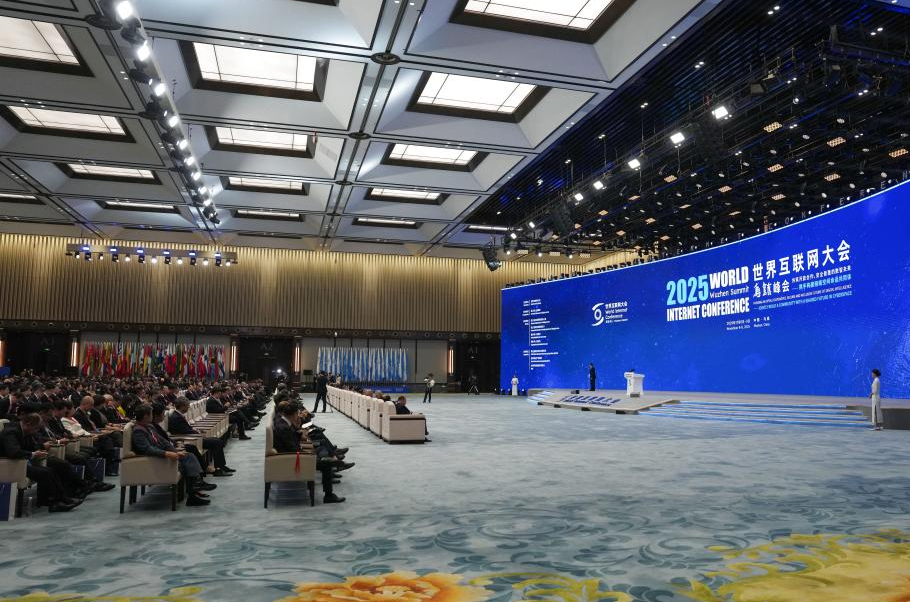
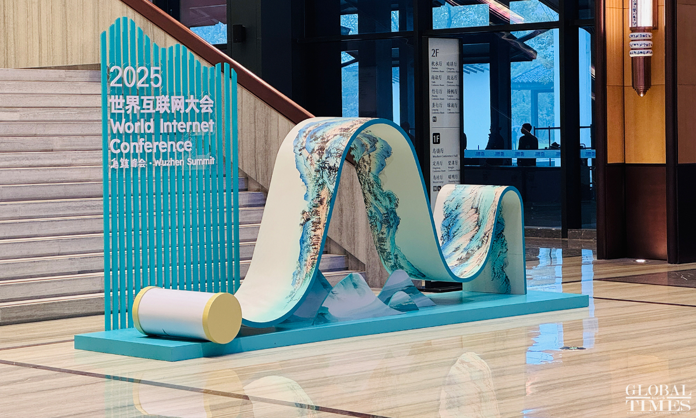
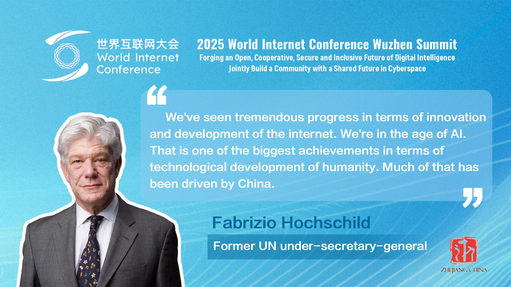
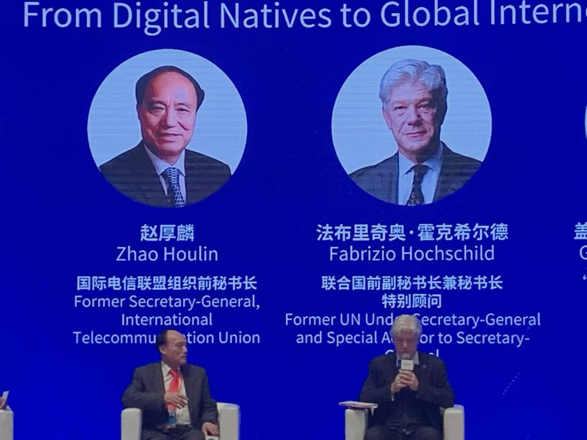

GYDA Senior Advisor Joins World Internet Conference Wuzhen Summit 2025

Location
Wuzhen, Zhejiang Province,
People's Republic of China
Date
November 6–9, 2025
Wuzhen, China — November 6–9, 2025 — The World Internet Conference (WIC) · Wuzhen Summit, one of the world's most influential platforms on global digital governance, convened its 2025 edition under the theme “Building an Open, Cooperative, Secure and Inclusive Digital Future — Jointly Shaping a Community with a Shared Future in Cyberspace.” The summit brought together government leaders, international organizations, technology companies, and experts to discuss the future of the internet, artificial intelligence, and cross-border digital cooperation.
Since its inception, the Wuzhen Summit has evolved into a landmark gathering where heads of state, ministers, senior officials, and global thought leaders jointly explore how to steer digital transformation in a way that is secure, inclusive, and beneficial to all. The 2025 summit once again demonstrated its strategic importance in shaping the global conversation on digital governance and emerging technologies.
High-Level Dialogue on Global Digital Governance
This year's agenda focused on AI governance, digital public goods, data security, inclusive digital development, and youth engagement in the digital future. Against the backdrop of rapidly expanding AI applications and rising concern over ethical use, bias, and safety, the Wuzhen Summit provided a high-level platform for countries, institutions, and industry leaders to exchange views on international norms and cooperative solutions.

Ahead of the opening ceremony, Li Shulei, China's Minister of Publicity, met with Fabrizio Hochschild, former UN Under-Secretary-General and Senior Advisor to the Global Youth Development Alliance (GYDA). Their conversation highlighted shared priorities around global digital governance architecture, youth empowerment, and strengthening international cooperation in an era defined by data and artificial intelligence. The meeting underscored both the diplomatic weight of the summit and the importance of engaging youth in high-level digital policy discussions.

Keynote by GYDA Senior Advisor Fabrizio Hochschild
During the conference, Mr. Hochschild delivered a keynote address drawing on his extensive experience in international governance and digital rights. He emphasized the urgency of reinforcing cross-border governance mechanisms, promoting responsible AI development, and ensuring that the benefits of digital innovation are accessible, inclusive, and rights-respecting.

In his remarks, he called for stronger collaboration between governments, international organizations, the private sector, and civil society to address common digital challenges. He highlighted the indispensable role of youth innovation and leadership in building a digital ecosystem that is fair, secure, and people-centered. His message resonated with participants and reinforced the idea that meaningful youth participation is essential for shaping a shared digital future.
Looking Toward a Shared Digital Future
The 2025 Wuzhen Summit reaffirmed its position as a global agenda-setting platform at a critical moment in the evolution of the digital age. By convening a diverse community of policymakers, experts, and innovators, the summit helped build consensus around key questions of AI governance, digital security, and inclusive development.
Looking ahead to 2026, the World Internet Conference Wuzhen Summit will continue to expand multilateral dialogue, gather global expertise, and inject new momentum into building a Community with a Shared Future in Cyberspace—one where youth voices, ethical innovation, and international cooperation move forward together.